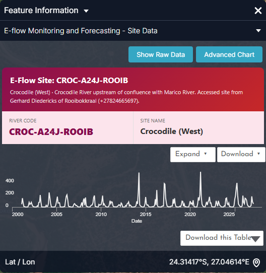
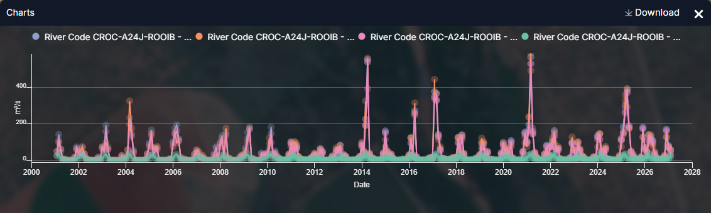
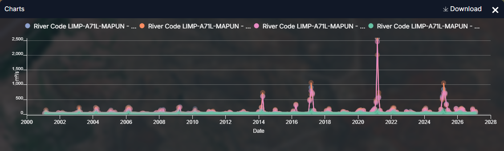

Environmental flows (e-flows)¶
The question¶
An ecologist, a river-basin regulator or a dam operator needs to know whether each reach of the Limpopo is receiving the flow its ecosystem needs, where flows have fallen below alert levels, and how a change in releases or abstraction would alter the ecological risk.
| Who | Decision | Cadence |
|---|---|---|
| Environmental regulators (DWS, ZINWA, DNGRH, DWA) | Enforce the Ecological Reserve / EWR; approve or refuse abstraction licences | Monthly compliance review |
| Dam operators | Size and time environmental releases | Weekly in the dry season |
| Park and conservation agencies (SANParks, Gonarezhou, Limpopo NP) | Trigger drought-response actions for aquatic biota | On alert-level change |
| LIMCOM e-flow task team | Cross-border e-flow reporting under the Limpopo Watercourse Commission agreement | Quarterly |
At a glance
- 31 monitored sites on 16 river reaches, each with a Recommended Ecological Category (mostly C; the estuary reach is D) and a risk region (RR1–RR10).
- Alerts run from Level 1 (requirement met) to Level 5 (severe shortfall). The alert text states the top-up needed, e.g. "Add 2.709 m³/s to the river to maintain E-flows".
- Crocodile (West) at Rooibokkraal: winter flows are 43–69 % below natural (abstraction), summer flows are near-natural; compliance 98.6–99.7 % of days per year since 2015.
- Limpopo, Shashe–Mzingwane reach: mean monthly flow 102 m³/s, peaks up to 2,575 m³/s; monthly deficits occur almost every dry season.
How the workflow fits together¶
flowchart TD
A[E-flow Monitoring and Forecasting<br/>+ Eflow Alert Levels] --> B{Any site at<br/>Level 3-5?}
B -- no --> M[Monthly compliance report]
B -- yes --> C[Click site:<br/>Present flow vs E-flow chart]
C --> D[Attribute the shortfall<br/>SWAT Incremental Contributions<br/>SWAT and Observed Sites]
D --> E{Cause?}
E -- Dry catchment --> F[Drought response<br/>see Droughts]
E -- Abstraction / storage --> G[SWAT Extraction Tool<br/>test release scenario · PROBFLO risk]
G --> H[Release / abstraction decision]
F --> M
H --> MData you will use¶
| Dataset | Where in the catalogue | What it tells you |
|---|---|---|
| E-flow Monitoring and Forecasting | Drought Monitoring & Risk Assessment → Hydrological Drought & E-flows | Modelled present flow vs. the environmental-flow requirement, per site, with a forecast — click for a chart |
| Eflow Alert Levels | same group | Current alert class (1–5) at each monitored site, with the top-up needed |
| Eflow Warnings · E-Flow Warning Status (LIMIS) | same group; Ecosystems → E-Flow Modeling & Risk | Reaches currently in warning |
| E-flow Risk Regions | same group | The ten ecological risk regions (RR1–RR10) used for assessment |
| Environmental Water Requirements (LIMIS) · EWR Assessment Sites (LIMIS) | Ecosystems → E-Flow Modeling & Risk | The formal EWR determinations and their sites |
| SWAT Modelled Discharge · SWAT and Observed Sites | Water Resources → Streamflow Monitoring | Present-day modelled flow and the gauges it is checked against |
| SWAT Incremental Contributions | Water Use Monitoring and Analysis → Basin Water Balance | How much flow each sub-catchment adds to the river |
| Aquatic Ecoregions (LIMIS) · Suitability Class / Suitability Map layers · Fish Survey Sites (LIMIS) | Ecosystems → Ecological Monitoring | Ecological context for interpreting a deficit |
| MiniSASS Sites · Fish Activity · Water Quality | Citizen Science | Ground observations of river health |
| SWAT Extraction Tool | Map tools (bottom right) | Query modelled flows for a channel and date range; the PROBFLO tab links flow to ecological risk |
Walkthrough¶
- Explore data → search
E-flow→ addE-flow Monitoring and Forecasting. Sites appear along the river network, labelled by river code (e.g.LIMP-A71L-MAPUN,CROC-A24J-ROOIB). - Add Eflow Alert Levels on top. The colour tells you the current class; start with the worst (dark red = Level 5).
- Click a site. The chart opens with four series — SWAT Present Flow, E-Flow (the requirement), Availability Surplus and Deficit. Hover any point to read values; drag across the chart or pick start and end dates to zoom to a season. Figures 1–2 below explain what you are looking at.
- Add SWAT Incremental Contributions to understand why: a deficit at a downstream site with healthy upstream contributions points to abstraction or storage in between, rather than a dry catchment.
- Add SWAT and Observed Sites and compare modelled flow with the nearest gauge in the chart — this is how much to trust the model at that reach.
- Scenario testing. Open the SWAT Extraction Tool (bottom-right icon).
Choose the Flow Type (Natural Flows or Present Flows), enter the
Channel ID shown in the site's feature info (e.g.
cha0978for the Crocodile site), set the Start / End Date, and FETCH DATA. Use the MAP tab to confirm the channel, TABLE for the numbers, and PROBFLO to see the ecological risk category the flow implies. - Add Aquatic Ecoregions (LIMIS) and the Suitability layers to weigh a deficit by the sensitivity of the reach; add MiniSASS Sites to see whether citizen-science river-health scores agree.
- Capture the alert map and the chart as a Story for the e-flow committee.
Reading the charts¶
The figures below are the portal's own charts, captured from the Feature Information panel (click a feature) and from the Charts dock that opens with the panel's Expand button. Every station, dam and site chart in the portal follows the same pattern: a summary card, a preview chart, Expand to enlarge, Download for the CSV.


- The card names the river code (used by the API and the SWAT Extraction Tool), the reach description and the site; the preview is present-day flow only.
- Advanced Chart opens the analytics view (regime, compliance, deficit heat-map) for the site in the live portal.


- The E-Flow requirement (green) is the low, seasonal line at the bottom; present flow (pink) rides above it in most months. Where pink dips to the green line in winter, the reach is at Level 2–3.
- Wet-season peaks (300–560 m³/s in 2004, 2014, 2017, 2021, 2025) are near natural — this reach is altered in the dry season, not the wet.
- Drag across a winter to zoom: the gap between pink and green in m³/s is the deficit the alert message asks the dam operator to release.


- On a main-stem site the wet-season peaks dwarf everything else; zoom into the dry months to see the deficits, or read the Deficit series in Show Raw Data.
- Compare with Figure 2: the same requirement logic, an order of magnitude more water.

- Channel geometry (stream order 4, 3.58 million ha drained) tells you how much upstream catchment — and abstraction — sits behind the site.
Longer-term context (charts derived from the same API data)
These are not portal screens: they were rendered from the same series with tools/use_case_charts.py to show what the portal's series look like over decades.


Alert levels and what to do¶
| Alert level | Meaning | Typical action |
|---|---|---|
| Level 1 | Present flow ≥ requirement | None; record compliance |
| Level 2 | Present flow within ~10 % below the requirement | Notify abstractors; review releases |
| Level 3 | Moderate shortfall | Curtail non-essential abstraction on the reach |
| Level 4 | Large shortfall; forecast worsening | Environmental release from upstream storage; restrict irrigation |
| Level 5 | Severe shortfall (flow near zero) | Emergency release; suspend licences; monitor biota (fish kills, water quality) |
The alert message states the top-up in m³/s — the number to hand to the dam operator.
Worked example — attributing a winter deficit¶
- In August, Eflow Alert Levels shows the Crocodile (West) site
CROC-A24J-ROOIBat Level 3. - Click the site: SWAT Present Flow is ~0.8 m³/s against an E-Flow of 2.1 m³/s (Figure 1, August) — a deficit of ~1.3 m³/s.
- Add SWAT Incremental Contributions: the upstream sub-catchments still contribute a few m³/s, so the catchment is not dry.
- Add SWAT and Observed Sites; the nearest gauge confirms the low flow — the model is trustworthy here.
- Open the SWAT Extraction Tool, Flow Type Natural Flows, Channel
cha0978, June–September of the current year: natural August flow is ~2.6 m³/s. The shortfall is abstraction and storage, not climate. - PROBFLO tab: at 0.8 m³/s the reach sits in a high ecological-risk band; at 2.1 m³/s it drops to moderate. That difference — 1.3 m³/s for eight weeks — is the release request.
Compliance-report checklist¶
- Alert level per site (map captured as a Story scene)
- For each site at Level 3+: present flow, requirement, deficit (m³/s) and spell length
- Attribution: catchment contribution vs abstraction / storage
- Gauge agreement with the model
- Scenario tested in the SWAT Extraction Tool and PROBFLO risk before/after
- Recommended release or licence action, with volume and duration
Limits to keep in mind¶
- All flows here are SWAT model outputs, calibrated against gauges. Where the nearest gauge disagrees with the model, weight the gauge.
- E-flow requirements are themselves the product of an assessment method; the PROBFLO risk categories are probabilistic, not thresholds of harm.
- Monthly series smooth over daily extremes — a month that is compliant on average can contain a week of zero flow.
- Site charts and the SWAT Extraction Tool call the IWMI data API and require a signed-in session.
Related¶
Droughts · Reservoir monitoring · Water accounting · Map Tools — SWAT Extraction Tool